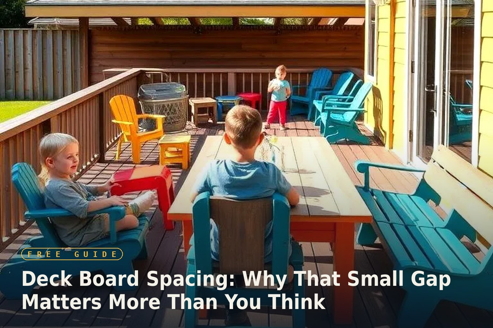

The deck calculator asks for a "gap" between boards, and it's easy to type in a default number without thinking much about it. That gap does more work than it looks like — it affects drainage, how the wood behaves over time, and directly changes how many boards you actually need to buy.
Why Decks Need a Gap At All
A deck with boards pushed flush against each other looks clean for about one season. Wood needs room to breathe: the gap lets rainwater drain through instead of pooling on the surface (which leads to rot and mildew), and it lets air circulate underneath, which keeps moisture from getting trapped against the joists. Skip the gap entirely and you're setting the deck up to fail years earlier than it should.
Standard Gap Sizes — and When to Break the Rule
For kiln-dried, already-stable lumber, 1/8" to 1/4" is the standard gap — enough for drainage without looking sloppy. But if you're building with green or wet pressure-treated lumber (very common, and often the cheapest option at the yard), experienced builders often install the boards almost touching on purpose. That wood will shrink noticeably as it dries out over the following months, and the gap opens up to the right size on its own. Installing a "normal" gap with wet lumber often means an oversized, uneven-looking gap by the following summer.
Board Direction Changes More Than the Look
Running boards perpendicular to the house is the standard, structurally simplest choice for most joist layouts. Running them parallel to the house (or diagonally) can visually stretch a narrow deck and looks distinctive, but it usually requires closer joist spacing underneath for the boards to stay properly supported, and diagonal cuts waste more material at the edges — the same waste-percentage logic that applies to diagonal tile layouts applies here too.
The Gap Directly Changes Your Material Count
This is the part that connects straight back to the calculator: a wider gap means each board (plus its gap) covers a bit more linear distance, which means you need slightly fewer total boards to cover the same deck area. It's a small effect per board, but on a large deck it adds up. Use the actual gap size you're planning to install — not a guessed default — for a materials estimate that matches what you'll really need.
Run your own numbers with the deck calculator, using your real board width and the gap size that matches your lumber's moisture level.